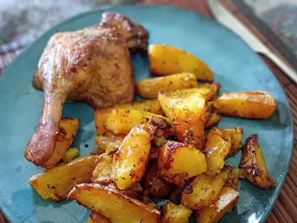

Фото: Vauia Rex, CC0

Куриные бёдра с картошкой в духовке
Бёдра и картошка на одном противне, гарнир пропитывается куриным соком
65 мин4 порц.765 ккал на порциюБ 51 · Ж 42 · У 45Интернациональная кухня
Продукты на 4 порц.
- Куриные бёдра8 шт
- Картофель8 шт
- Лук репчатый1 шт
- Чеснок2 зуб.
- Паприка1 ч. л.
- Сушёные травы1 ч. л.
- Растительное масло3 ст. л.
- Соль2 ч. л.
- Перец чёрный молотый2 щеп.
Как готовить
- Разогрейте духовку до 200 °C (сильный жар).
- Картошку почистите и нарежьте крупными дольками, лук - толстыми кольцами.
- В миске смешайте картошку и лук с половиной масла, половиной соли, травами и раздавленным чесноком. Выложите на противень ровным слоем.
- Бёдра натрите остатками масла, солью, перцем и паприкой. Положите сверху на картошку кожей вверх.
- Запекайте 45-50 минут, пока кожа не станет золотистой, а картошка не начнёт легко прокалываться ножом.
- Проколите бедро у кости: сок должен быть прозрачным. Если розовый, верните в духовку на 10 минут.
Совет. Режьте картошку крупно, примерно одного размера с бедром. Мелкие кусочки пересохнут раньше, чем пропечётся курица.